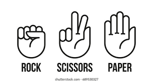
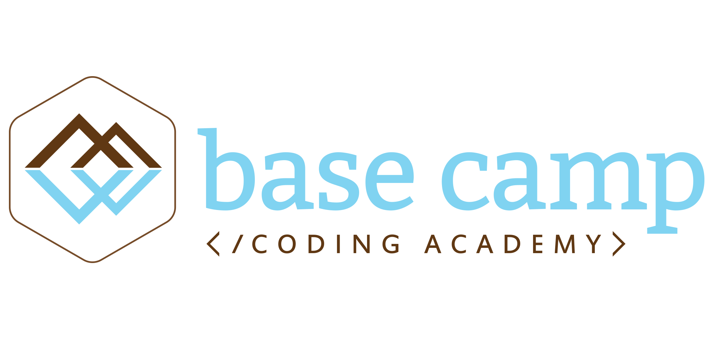

RJay Pickering

This was my final project for Base Camp Coding Academy, Capstone Project, that my two partners and I had a month to come up with. We had a Front-End, Back-End, and a Full-Stack Developer. I was the Full-Stack and the leader of our group, while my partners filled in the other roles. My partners decided on a project that was really a great idea, and that is a News Aggregator. We decided to call it, Base Camp News. I helped the Back-End with handling the apis and printing them, while i helped the Front-End with styling and fixing it for multiple screens. I also set up most of the html pages for both Front-End and Back-End to work on and I also did all of the stuff for the settings page except for the styling part of it.

This is another JavaScript Project that I did on my own free time. This
is my own solo project that will let you play Rock, Paper, Scissors with
a computer. The idea behind this is that I wanted to make a simple game
with a personal favorite language. When you play the game, the option
that you pick will become yellowish green and the computers option will
be different from the user and become red. After every game, you will
need to press the New Game button to play again, your score will of
course save, but the score can only be reset when you refresh the page.
This is my Java and SQL project that I have made. This Project is your
basic, run of the mill, CRUD app that you can add any anime into. This
project is called Animoo Hub (Anime Storage) and you are able to Add
your anime's into this app, Update your anime, Delete it from your list,
and view any anime you have saved. What is a anime? Anime is a Japanese
Cartoon that millions tend to enjoy for the plot line, or the pretty
animations it has.

This project is my first big project to write in JavaScript. Another
classmate, Randy Trullet, worked with me in coming up with and designing a first ever
chatbot for Base Camp Coding Academy named Everest. This bot took two
days to build, but is already in its beta form. The only thing it has as
of now, is only certain questions about BCCA that are asked all the
time, as told by our director. Update: its finally up and running. It has basic answers and everything about Base Camp of 2021.
This is my first Django project that I had made in my time at Base Camp.
This project is called Missing Cats Of America, a website for posting or
finding missing cats. You can add your missing cats and see others
missing cats to see if you have seen them. I made this website because
during the time of learning Django, my cat went missing. I made this
website for my cat.
WARNING: Django does not work with GitHub Pages, so the only way to view
this project in action, please download!

While I was working with my Industry Mentor, Ana Filote, she started to
teach me how to make video games using Pygame. She has taught me how to
make the Snake Game(BETA), and the Pong-Game. Over the Course of the
time, I was finally able to teach her how to make my own kind of game.
-that game is not in github right now!
In my third week at Base Camp Coding Academy, we had an assignment to
make a health depleting game using what we had learned so far in Python.
The story behind this game is that you are dragged into your tv by a
static humanoid and wake up in a forest clearing. In front of you there
are three goblins and the static humanoid in a suit sitting on a throne
behind the goblins. You have to fight the goblins and defeat the boss at
the end of the level. What this project has taught me is to have
confidence in my work and to keep working to achieve my goal to be video
game designer.
A classmate and I were partnered for a unit project to build something
in Python. We decided to make a Pokemon safari park game revolving
around the third generation Pokemons. The player has random encounters
with Pokemon in the wild or can go fight the gym leaders to obtain a
Bronze, Silver, and Gold Medal. We also added a Legendary that you can
find and catch after obtaining the Golden Medal from the battle towers.
From this project, I learned teamwork and worked on my communication
skills.

This Charity website is my first Html and CSS project that I have done.
This project is about a campaign to reboot Black Ops for the newer gen
consoles. Ive made this project as standard and infographic that It is
not the most entertaining website that I made but it is made to give you
information, instead of making it eye catching or fun. On the other
hand, this is really fun to make as my first Html project.